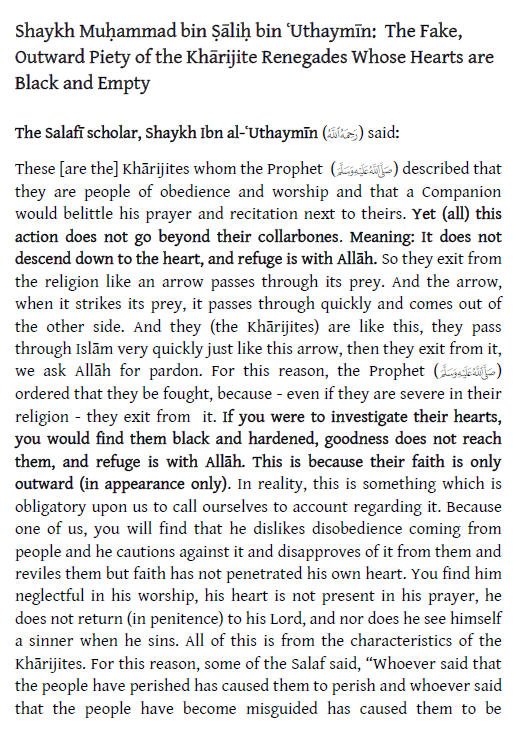

Kharijites.Com
Posted by Abu Iyaad on Saturday, October, 08 2016 and filed under Scholars
The Salafī scholar, Shaykh Ibn al-ʿUthaymīn said:
An example of that is the one who holds the permissibility of revolting against the Muslim leaders, those who are Muslims, this is the view of the Khārijites. We know that they are severe in their religion of Allāh, but their religion does not go beyond their throats, their hearts are ruined (deserted) and empty of faith.
 Click the icon or this link to download and view the full article.
Click the icon or this link to download and view the full article.
